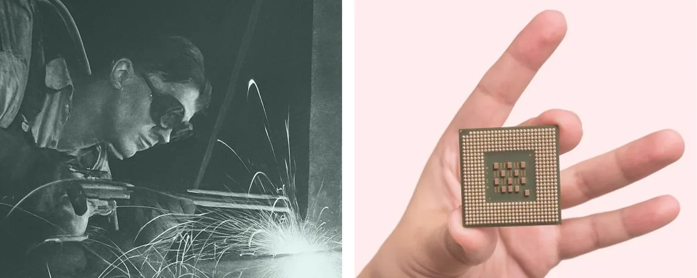
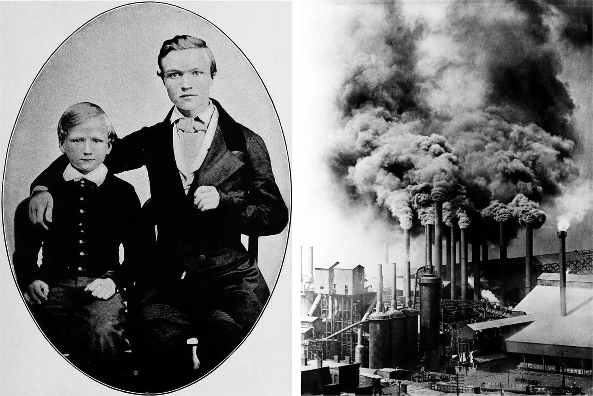
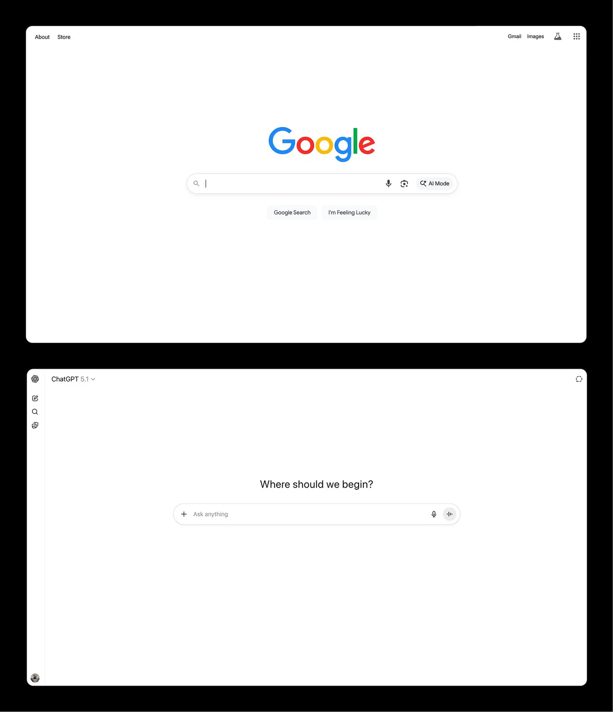
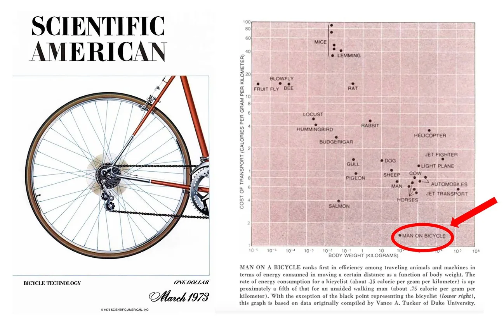
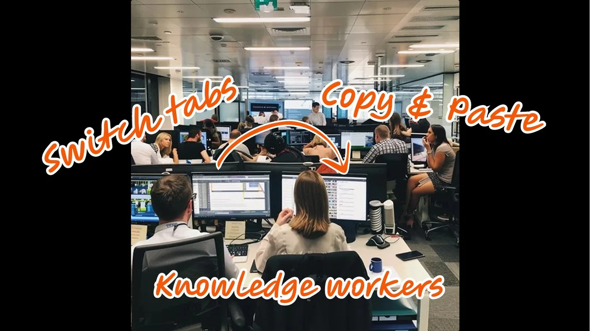
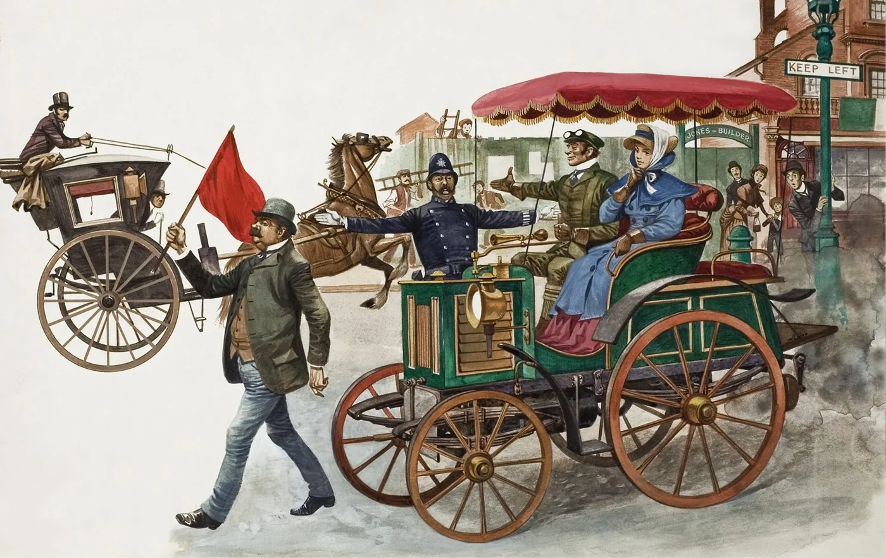
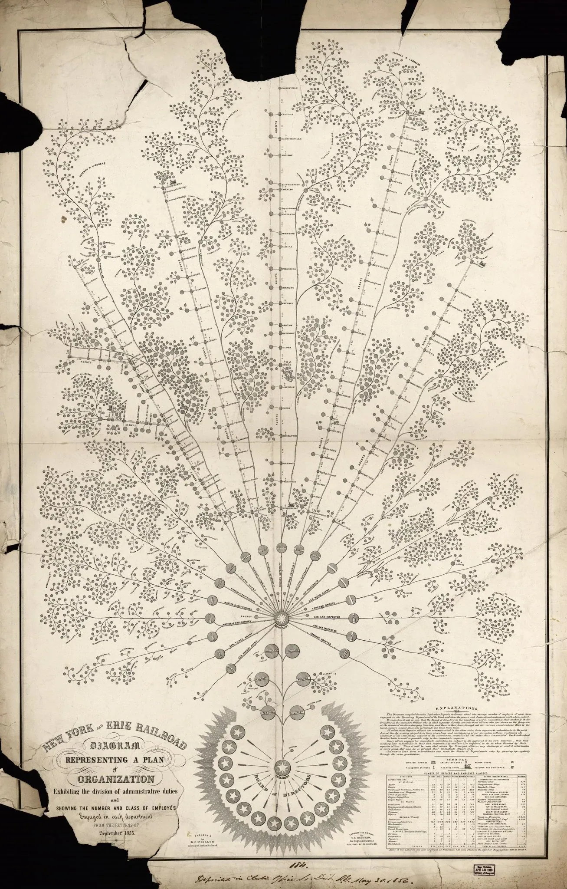

Steam, Steel, and Infinite Minds
Every era is shaped by its miracle material. Steel forged the Gilded Age. Semiconductors switched on the Digital Age. Now AI has arrived as infinite minds. If history teaches us anything, those who master the material define the era.
In the 1850s, Andrew Carnegie ran through muddy Pittsburgh streets as a telegraph boy. Six in ten Americans were farmers. Within two generations, Carnegie and his peers forged the modern world. Horses gave way to railroads, candlelight to electricity, iron to steel.

Left: teenage Andrew Carnegie and his younger brother. Right: Pittsburgh steel factories during the Gilded Age.

Pittsburgh steel factories during the Gilded Age.
Since then, work shifted from factories to offices. Today I run a software company in San Francisco, building tools for millions of knowledge workers. In this industry town, everyone is talking about AGI, but most of the two billion desk workers have yet to feel it. What will knowledge work look like soon? What happens when the org chart absorbs minds that never sleep?
Driving to the future via the rearview window
This future is often difficult to predict because it always disguises itself as the past. Early phone calls were concise like telegrams. Early movies looked like filmed plays. This is what Marshall McLuhan called "driving to the future via the rearview window."
Early movies often looked like stage plays, with one camera fixed on the stage.
Today, we see this as AI chatbots which mimic Google search boxes. The most popular form of AI looks like the Google search of the past. We're now deep in that uncomfortable transition phase which happens with every new technology shift.
I don't have all the answers on what comes next. But I like to play with a few historical metaphors to think about how AI can work at different scales, from individuals to organizations to whole economies.
Individuals: from bicycles to cars
The first glimpses can be found with the high priests of knowledge work: programmers.
My co-founder Simon was what we call a 10× programmer, but he rarely writes code these days. Walk by his desk and you'll see him orchestrating three or four AI coding agents at once, and they don't just type faster, they think, which together makes him a 30-40× engineer. He queues tasks before lunch or bed, letting them work while he's away. He's become a manager of infinite minds.
In the 1980s, Steve Jobs called personal computers "bicycles for the mind." A decade later, we paved the "information superhighway" that is the internet. But today, most knowledge work is still human-powered. It's like we've been pedaling bicycles on the autobahn.

A 1970s Scientific American study on locomotion efficiency inspired Steve Jobs's 'bicycle for the mind'.
With AI agents, someone like Simon has graduated from riding a bicycle to driving a car. When will other types of knowledge workers get cars? Two problems must be solved.
Compared with coding agents, why is it more difficult for AI to help with knowledge work? Because knowledge work is more fragmented and less verifiable.
First, context fragmentation. For coding, tools and context tend to live in one place: the IDE, the repo, the terminal. But general knowledge work is scattered across dozens of tools. Imagine an AI agent trying to draft a product brief: it needs to pull from Slack threads, a strategy doc, last quarter's metrics in a dashboard, and institutional memory that lives only in someone's head. Today, humans are the glue, stitching all that together with copy-paste and switching between browser tabs. Until that context is consolidated, agents will stay stuck in narrow use-cases.
The second missing ingredient is verifiability. Code has a magical property: you can verify it with tests and errors. Model makers use this to train AI to get better at coding. But how do you verify if a project is managed well, or if a strategy memo is any good? We haven't yet found ways to improve models for general knowledge work. So humans still need to be in the loop to supervise, guide, and show what good looks like.
Programming agents this year taught us that having a "human-in-the-loop" isn't always desirable. It's like having someone personally inspect every bolt on a factory line, or walk in front of a car to clear the road — see the Red Flag Act of 1865. We want humans to supervise the loops from a leveraged point, not be in them.

The Red Flag Act of 1865 required a flag bearer to walk ahead of the vehicle.
Once context is consolidated and work is verifiable, billions of workers will go from pedaling to driving, and then from driving to self-driving.
Organizations: steel and steam

Organizational chart for the New York and Erie Railroad, 1855.
Companies are a recent invention. They degrade as they scale and reach their limit.
A few hundred years ago, most companies were workshops of a dozen people. Now we have multinationals with hundreds of thousands. The communication infrastructure — human brains connected by meetings and messages — buckles under exponential load. We try to solve this with hierarchy, process, and documentation. But we've been solving an industrial-scale problem with human-scale tools, like building a skyscraper with wood.
Two historical metaphors show how future organizations can look differently with new miracle materials.
The first is steel. Before steel, buildings in the 19th century had a limit of six or seven floors. Iron was strong but brittle and heavy; add more floors, and the structure collapsed under its own weight. Steel changed everything. It's strong yet malleable. Frames could be lighter, walls thinner, and suddenly buildings could rise dozens of stories. New kinds of buildings became possible.

A wonder of steel: the Woolworth Building, tallest in the world when completed in 1913.
AI is steel for organizations. It has the potential to maintain context across workflows and surface decisions when needed without the noise. Human communication no longer has to be the load-bearing wall. The weekly two-hour alignment meeting becomes a five-minute async review. The executive decision that required three levels of approval might soon happen in minutes. Companies can scale, truly scale, without the degradation we've accepted as inevitable.
The second story is about the steam engine. At the beginning of the Industrial Revolution, early textile factories sat next to rivers and streams and were powered by waterwheels.

A mill powered by a water wheel — powerful, but tied to rivers and seasons.
When the steam engine arrived, factory owners initially swapped waterwheels for steam engines and kept everything else the same. Productivity gains were modest.
The real breakthrough came when factory owners realized they could decouple from water entirely. They built larger mills closer to workers, ports, and raw materials. And they redesigned their factories around steam engines. Later, when electricity came online, owners further decentralized away from a central power shaft and placed smaller engines around the factory for different machines. Productivity exploded, and the Second Industrial Revolution really took off.
We're still in the "swap out the waterwheel" phase. AI chatbots bolted onto existing tools. We haven't reimagined what organizations look like when the old constraints dissolve and your company can run on infinite minds that work while you sleep.
At my company Notion, we have been experimenting. Alongside our 1,000 employees, more than 700 agents now handle repetitive work. They take meeting notes and answer questions to synthesize tribal knowledge. They field IT requests and log customer feedback. They help new hires onboard with employee benefits. They write weekly status reports so people don't have to copy-paste. And this is just baby steps. The real gains are limited only by our imagination and inertia.
Economies: from Florence to megacities
Steel and steam didn't just change buildings and factories. They changed cities.
Until a few hundred years ago, cities were human-scaled. You could walk across Florence in forty minutes. The rhythm of life was set by how far a person could walk, how loud a voice could carry.
Then steel frames made skyscrapers possible. Steam engines powered railways that connected city centers to hinterlands. Elevators, subways, highways followed. Cities exploded in scale and density. Tokyo. Chongqing. Dallas.
These aren't just bigger versions of Florence. They're different ways of living. Megacities are disorienting, anonymous, harder to navigate. That illegibility is the price of scale. But they also offer more opportunity, more freedom. More people doing more things in more combinations than a human-scaled Renaissance city could support.
I think the knowledge economy is about to undergo the same transformation.
Today, knowledge work represents nearly half of America's GDP. Most of it still operates at human scale: teams of dozens, workflows paced by meetings and email, organizations that buckle past a few hundred people. We've built Florences with stone and wood.
When AI agents come online at scale, we'll be building Tokyos. Organizations that span thousands of agents and humans. Workflows that run continuously, across time zones, without waiting for someone to wake up. Decisions synthesized with just the right amount of human in the loop.
It will feel different. Faster, more leveraged, but also more disorienting at first. The rhythms of the weekly meeting, the quarterly planning cycle, and the annual review may stop making sense. New rhythms emerge. We lose some legibility. We gain scale and speed.
Beyond the waterwheels
Every miracle material required people to stop seeing the world via the rearview mirror and start imagining the new one. Carnegie looked at steel and saw city skylines. Lancashire mill owners looked at steam engines and saw factory floors free from rivers.
We are still in the waterwheel phase of AI, bolting chatbots onto workflows designed for humans. We need to stop asking AI to be merely our copilots. We need to imagine what knowledge work could look like when human organizations are reinforced with steel, when busywork is delegated to minds that never sleep.
Steel. Steam. Infinite minds. The next skyline is there, waiting for us to build it.